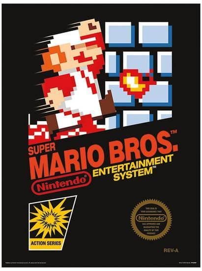

About
About the NES

Buy the original NES
Buy the NES Classic. Note: You can hack the NES classics to add your games as shown in the video at the bottom, by Patton Plays, youtube channel at this link
Use Virtual Consoles on modern consoles
Download an emulator and use NES ROMs. Note: Do not download online NES ROMs of copyrighted games, as they are illegal to download. Instead, use hardware to rip ROMs from NES cartridges to store them on the computer if it is a copyrighted game. This is not illegal.
| Game | Box Art | Rating | Reason |
|---|---|---|---|
| Super Mario Bros. |  | 4/5 | This is a classic game. If you have never played it, you have never experienced the NES. This is the face of the NES, you have to try it to know NES gaming. However, the game has lots of issues that prevent it from being a 5/5 |
| Mega Man 4 | 5/5 | This is the best Mega Man games of the NES. The original and 2, had some design issues, which while, not stopping them from being overall fun games, rendered them far from perfect. 3 was the begining of an increase in quality for the series, however, it still had some design issue that made the far from perfect. However, 4 was a game with a step from the last games had great mechanics, and a balanced game design that renders it the best of the NES classics. If you want to start with a Mega Man game, start with this one. | |
| Castlevania | 3/5 | This game, is quite a fun game and offers a challenging experience to those who try to play it. However, it has some design issues and flaws that prevent it from being higher rated. | |
| Legend of Zelda |  |
3/5 | This a very fun, explorative game. However, at some points, you will be left struggling without a guide. |
| Game | Box Art | Rating | Reason |
|---|---|---|---|
| Castlevania II: Simon's Quest | 2/5 | This game is fun to play, when you play it the wrong way, however when you play it the right way, it becomes signficantly less fun. You start in the same spot every time you input your password, and in addition, it is nearly impossible to legiatlemely achieve the best ending. The game is also a convulated Metroidvania, which while having some good ideas and potential, makes for an unfun experience for a casual player. I am not as harsh on it because I've always played it the wrong way, however if I did try to play it the right way, I probably would not enjoy it. You must "prossess" all 5 of Dracula's parts and fight him at the end of the game to complete it. You must also game in a specfic time limit of a day and night cycle, which is difficult considering that you need to grind to get specific items to progress. | |
| Mega Man 2 |  |
2/5 | Just because a game is fun does not make it good. I like Mega Man 2, and it features some good level design. I even enjoy playing. What makes it bad however, is its balancing issues. From sections like Quick Man's Stage, to Heat Man's Stage, to Metal Blades, Atomic Heat, Bubble Lead, and Boobeam's Trap *shudders and experiences Boobeam War Flashbacks*, the game has tons of balancing issues that make it somewhat hard to defend. |
| Dr. Jekyll and Mr. Hyde |  |
1/5 | This is a game that is more obscure. This mechanics of Mr. Jekyll and Mr. Hyde are very confusing, and the game also has bad graphics. The game is virtually unplayable and does not even have a good story to go along with it. |
| Kid Kool | 🗑️/5 | The name of this game, and the fact that the second and final bosses are differently colored clones of each other, just with different platforms, should tell you all you need to know. However, if you're still not convinced, look at footage of others playing, or better yet, boot it up in an emulator. It's a horrible Super Mario Bros. clone |